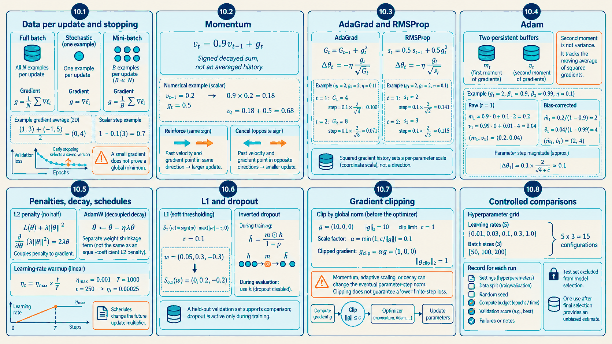
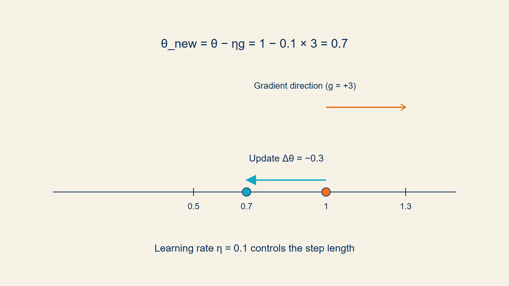

10 Optimization and regularization
The negative gradient identifies local loss decrease, but it does not choose how far to change the parameters. Different batches can also give different directions. An optimizer converts these gradients into parameter updates, sometimes using information saved from earlier steps.
The slope and gradient calculation in §5.4 supplies the starting point. The loss in Chapter 8 defines what is minimized. Batch selection, gradient history, coordinate scaling, and parameter penalties affect different parts of the update.

10.1 Data per update and stopping criteria
Computing a gradient over every training example can be costly before even one parameter changes. Using fewer examples permits earlier updates but makes the direction depend more on the selected data.
Full-batch gradient descent uses the entire training set for each gradient. Stochastic gradient descent uses one sampled example per update in its strict sense. Mini-batch gradient descent averages a subset that can be processed together. Software also uses the abbreviation SGD for the update rule applied to such batches.
The batch size counts examples contributing to one update. Larger batches usually require more memory for intermediate outputs retained until their gradients are calculated. These stored outputs are activation memory. With uniform independent sampling, averaging more examples reduces sampling variance. Correlated or systematically selected examples can limit that benefit.
For parameters \(\theta_t\), learning rate \(\eta>0\), and a differentiable scalar loss \(L\), the update is
\[ \theta_{t+1}=\theta_t-\eta\,\operatorname{grad}L(\theta_t) \tag{10.1}\]
For a nonzero gradient, the local approximation from §5.4 gives change \(-\eta\|\nabla L\|_2^2\). This describes sufficiently small steps, not an exact finite-step loss difference. A large step can cross a low-loss region and increase the loss.
For a nonempty set \(B\) of examples, each with loss \(L_i\), the mean gradient is
\[ g_B=\frac{1}{\lvert B\rvert}\sum_{i\in B}\operatorname{grad}L_i(\theta) \tag{10.2}\]
The mean gradient evaluates each \(L_i\) at the same parameter version. Uniform sampling makes this an unbiased estimate of the full empirical-risk gradient. Changing the sample weights or loss reduction changes the objective being estimated.
Example: A scalar step and a batch direction
A supplied scalar gradient of 3 at parameter 1, with rate 0.1, proposes \(1-0.1(3)=0.7\).
In a separate two-coordinate batch, the example gradients are \((1,3)\) and \((-1,5)\). Their mean is \(g_B=((1,3)+(-1,5))/2=(0,4)\).
Conclusion: The scalar step follows the supplied slope. In the batch, opposing first-coordinate contributions cancel while the second-coordinate contributions reinforce. Neither calculation establishes the loss after its proposed step.
A local minimum has no smaller objective value at nearby parameter choices. A global minimum has the lowest objective value across all allowed parameter choices.
A convex objective lies below or on each straight segment joining two points on its graph. A local minimum is therefore also global. A convergence guarantee also needs assumptions about gradient variation, step size, and existence of a minimum. Neural objectives are generally nonconvex, so this guarantee does not apply.
A zero gradient marks a stationary point. It can be a minimum, maximum, or saddle point, with both higher and lower function values arbitrarily nearby in the saddle case. A small gradient alone does not prove a global minimum.
Stopping rules answer different questions. A fixed step or time budget bounds cost. Small gradient, loss-change, or parameter-change tolerances detect little progress on the measured objective. Small updates can also result from an excessively small learning rate. Stochastic losses require trends over several batches rather than one change.
Early stopping selects a saved parameter version using validation performance, often after a declared number of evaluations without improvement. It assesses held-out behavior, not whether optimization reached a mathematical minimum. The later bowl and six-hump-camel exercises in §24.1 compare optimization behavior through parameter and objective trajectories.
Batch choice determines the current estimate. An optimizer can also use earlier estimates when choosing the next step.
10.2 Momentum and persistent direction history
Successive gradients can alternate across a valley while agreeing along it. Momentum combines the current gradient with a decayed stored direction before updating the parameters.
\[ v_{t} = \beta v_{t-1} + g_{t};\quad \theta_{t+1} = \theta_{t} - \eta v_{t} \tag{10.3}\]
Here \(g_t\) is the current gradient, \(v_t\) is the velocity buffer, and \(0\leq\beta<1\) controls its persistence. Each buffer has its parameter’s shape. Starting with \(v_0=0\) gives \(v_t=g_t+\beta g_{t-1}+\beta^2g_{t-2}+\cdots\).
This convention is an unnormalized decayed sum. An exponential moving average instead multiplies the new gradient by \(1-\beta\). Their scales differ, so their learning rates cannot be compared without accounting for that convention. The default undampened momentum rule in torch.optim.SGD uses the sum convention.1
Example: Old and new contributions
With \(\beta=0.9\), previous velocity 0.2, and current gradient 0.5, the retained contribution is \(0.9(0.2)=0.18\). Adding the new gradient gives velocity 0.68.
Conclusion: The next step uses both contributions. Replacing the sum with an average would give a different velocity and parameter change at the same learning rate.
Consistent gradients reinforce one another and alternating contributions partly cancel. The stored direction can also carry parameters past a minimum. Momentum adds one persistent tensor per parameter and does not change the loss definition.
Later, the running-batch code in §11.6 checks plain SGD without momentum after the graph calculation is established. Squared-gradient histories answer a different question: how much should each coordinate be scaled?
10.3 Coordinate scaling with AdaGrad and RMSProp
A shared learning rate can cause large changes in one coordinate and small changes in another. Adaptive methods divide each gradient coordinate by a scale calculated from its current and previous magnitudes.
AdaGrad accumulates squared gradients in \(G_t\), starting at zero:
\[ G_{t} = G_{t-1} + g_{t}^{2};\quad \theta_{t+1} = \theta_{t} - \eta\,\frac{g_{t}}{\sqrt{G_{t}} + \epsilon} \tag{10.4}\]
Squares, square roots, and division act coordinate by coordinate. The positive constant \(\epsilon\) prevents division by zero. Repeated large gradients increase a coordinate’s denominator. Because \(G_t\) never decreases, effective rates can eventually become too small.
RMSProp instead maintains a decayed squared-gradient average \(s_t\), also initialized to zero:
\[ s_{t} = \beta s_{t-1} + (1-\beta)g_{t}^{2};\quad \theta_{t+1} = \theta_{t} - \eta\,\frac{g_{t}}{\sqrt{s_{t}} + \epsilon} \tag{10.5}\]
The decay satisfies \(0\leq\beta<1\). Old magnitudes lose influence, allowing the denominator to follow recent gradients. Squaring removes the sign, so this state measures scale rather than direction. Neither rule guarantees a better objective value than SGD.
Example: Two equal gradients, different histories
Take rate 0.1 and successive scalar gradients 2 and 2. The following arithmetic neglects \(\epsilon\) relative to the nonzero denominators.
AdaGrad gives \(G_1=4\) and \(G_2=4+4=8\). Its step magnitudes are \(0.1(2)/\sqrt4=0.100\) and \(0.1(2)/\sqrt8\approx0.071\).
RMSProp with \(\beta=0.5\) gives \(s_1=0.5(4)=2\) and \(s_2=0.5(2)+0.5(4)=3\). The corresponding steps are approximately 0.141 and 0.115.
Conclusion: The gradients have equal direction and magnitude in both steps. The different stored histories alone change the denominators and resulting step sizes.
Momentum retains signed gradients, while these methods retain squared magnitudes. Adam keeps both kinds of information.
10.4 Adam moments and initialization correction
An update can use a persistent direction while also adapting each coordinate’s scale. Adam stores two exponential averages with the same shapes as its parameters.2 These persistent buffers are optimizer state: information kept between updates separately from the current gradient and the model weights.
Its first-moment estimate \(m_t\) averages signed gradients:
\[ m_{t} = \beta_{1}m_{t-1} + (1-\beta_{1})g_{t} \tag{10.6}\]
Its second-moment estimate \(v_t\) averages squared gradients:
\[ v_{t} = \beta_{2}v_{t-1} + (1-\beta_{2})g_{t}^{2} \tag{10.7}\]
Here \(g_t\) is the gradient at step \(t\), and \(0\leq\beta_1,\beta_2<1\) set the two decay rates. The second moment is not a variance around \(m_t\). Both buffers start at zero, and steps are counted from \(t=1\).
Expanding the first recurrence gives \(m_t=(1-\beta_1)\sum_{k=1}^t\beta_1^{t-k}g_k\). Its weights sum to \(1-\beta_1^t\), which is less than one. If the gradients have a constant expected value \(\mu\), then \(\mathbb E[m_t]=(1-\beta_1^t)\mu\). The squared-gradient average has the corresponding factor \(1-\beta_2^t\).
Bias correction removes these zero-initialization factors:
\[ \widehat{m}_{t} = \frac{m_{t}}{1-\beta_{1}^{t}},\quad \widehat{v}_{t} = \frac{v_{t}}{1-\beta_{2}^{t}} \tag{10.8}\]
Sampling noise remains, and the gradient distribution can still change as training progresses. Adam then divides corrected direction by corrected root-mean-square scale:
\[ \theta_{t+1} = \theta_{t} - \eta\,\frac{\widehat{m}_{t}}{\sqrt{\widehat{v}_{t}}+\epsilon} \tag{10.9}\]
The positive \(\epsilon\) protects small denominators. The first- and second-moment recurrences above supply both state values for this update.
Example: Corrected first-step statistics
Use \(g_1=2\), \(\beta_1=0.9\), \(\beta_2=0.99\), zero initial buffers, and rate 0.1. Then \(m_1=0.1(2)=0.2\) and \(v_1=0.01(4)=0.04\).
Dividing by the initialization factors gives \(\hat m_1=0.2/0.1=2\) and \(\hat v_1=0.04/0.01=4\). Neglecting \(\epsilon\) in this nonzero example, the step magnitude is \(0.1(2)/\sqrt4=0.1\).
Conclusion: The corrected statistics recover the first observed gradient and its square. The two corrections act together, so their effect on the step cannot be inferred from either correction alone.
The first-step calculation can also isolate the effect of bias correction from the choice between Adam and SGD. The contour sketch represents objective positions, while the supplied gradient below determines the numeric updates. The calculation checks parameter changes from that gradient. Checking the resulting loss requires another forward calculation.

Example: SGD and the first Adam step
Start with \(\theta=0.6\), \(g=-0.4\), and \(\eta=0.1\). Plain SGD gives \(\theta'=0.6-0.1(-0.4)=0.640\).
For Adam, initialize both moments to zero and use \(\beta_1=0.9\), \(\beta_2=0.999\), and \(\epsilon=10^{-8}\). The stored moments become \(m_1=-0.040\) and \(v_1=0.00016\).
Bias correction gives \(\hat m_1=-0.040/(1-0.9)=-0.400\) and \(\hat v_1=0.00016/(1-0.999)=0.160\). The parameter increase is \(0.040/(\sqrt{0.160}+10^{-8})\approx0.100\), giving \(\theta'\approx0.700\).
Without either bias correction, the same raw moments give increase \(0.004/(\sqrt{0.00016}+10^{-8})\approx0.316\). Correction therefore reduces this Adam step. The corrected increase still exceeds SGD’s 0.040.
Conclusion: Comparing Adam with SGD does not isolate bias correction. Holding Adam’s raw moments fixed exposes the correction’s actual effect. Later steps depend on new gradients and both persistent moment buffers.
For \(P\) flattened parameters, the parameter vector, gradient, and each Adam moment have shape \([P]\). The loss remains scalar. Clearing a gradient buffer does not clear momentum or Adam moments. This persistent state adds storage and memory traffic compared with plain SGD.
Moment-buffer precision and the stabilizer affect numerical execution and memory cost. The optimizer still needs a suitable learning rate and held-out evaluation. Parameter shrinkage is a separate choice.
10.5 Penalties, decay, and learning-rate schedules
A model can improve its training fit while performing worse on held-out examples. Reducing parameter magnitudes is one control to test against that behavior. The penalty and a separate shrinkage operation must be compared under the same coefficient convention.
An L2 penalty adds a squared-parameter term to the data loss:
\[ L_{\mathrm{total}} = L_{\mathrm{data}} + \lambda\,\theta^{T}\theta \tag{10.10}\]
Here \(\theta\) contains the chosen penalized parameters and \(\lambda\geq0\) controls the penalty. There is no factor of one half. The derivative is therefore \(2\lambda\theta\). The corresponding plain SGD update is
\[ \theta_{t+1} = \theta_{t} - \eta\,(g_{t} + 2\lambda\theta_{t}) \tag{10.11}\]
The symbol \(g_t\) denotes the data-loss gradient. Writing the data loss as empirical risk \(\widehat R\) gives the same objective in the dataset notation introduced in §1.3. It does not define a second penalty.
Example: An L2 penalty and its SGD update
For \(\theta=(3,4)\) and \(\lambda=0.1\), the contribution is \(0.1(3^2+4^2)=2.5\). The same value appears whether the data term is written \(L_{\mathrm{data}}\) or \(\widehat R\).
With scalar \(\theta_t=1\), \(g_t=0.4\), \(\eta=0.1\), and \(\lambda=0.01\), the update is \(1-0.1(0.4+2(0.01)(1))=0.958\).
Conclusion: The derivative adds \(2\lambda\theta_t\) to the data gradient. For plain SGD, this equals separate decay with coefficient \(2\lambda\). Equal numerical coefficients would compare different amounts of shrinkage under this no-half penalty convention.
Weight decay subtracts a fraction of the current parameter value. AdamW applies this shrinkage separately from Adam’s gradient statistics.3
\[ \theta_{t+1} = \theta_{t} - \eta\,\frac{\widehat{m}_{t}}{\sqrt{\widehat{v}_{t}}+\epsilon} - \eta\lambda\theta_{t} \tag{10.12}\]
Here \(\lambda\geq0\) is the decay coefficient. Both subtracted terms use the pre-update parameter version. The decay contributes \(-\eta\lambda\theta_t\), independently of the adaptive denominator. A literal shrinkage interpretation assumes \(0\leq\eta\lambda<1\). Excluding biases or normalization parameters is a configuration choice.
The L2 penalty changes the gradient entering Adam’s moments. Adaptive scaling then acts on the penalty contribution too. It therefore generally differs from AdamW’s separate decay operation.
Warmup gradually increases the early learning rate to limit initial step sizes. One optional linear schedule is
\[ \eta_{t} = \eta_{\max}\,\min\!\left(1,\frac{t}{T_{\mathrm{warmup}}}\right) \tag{10.13}\]
The target rate is \(\eta_{\max}\) and the positive integer \(T_{\mathrm{warmup}}\) counts warmup steps. With \(t=1,2,\ldots\), the first rate is \(\eta_{\max}/T_{\mathrm{warmup}}\). After warmup, this schedule keeps the rate at \(\eta_{\max}\). A later reduction can make updates smaller as fitting progresses. A learning-rate decay schedule reduces the rate according to an explicit rule. For example, after warmup let \(u=0,1,\ldots\) count further updates and use \(\eta(u)=0.001(0.5)^{\lfloor u/1000\rfloor}\). The rate is 0.001 for updates 0–999, 0.0005 for 1000–1999, and 0.00025 for 2000–2999. These abrupt reductions are called step decay.
Linear and cosine schedules specify the rate over a chosen positive post-warmup horizon of \(S\) updates. Let \(q=u/S\) run from 0 to 1, and choose a peak and floor with \(0\le\eta_{\min}\le\eta_{\max}\). Linear decay uses \(\eta_{\min}+(\eta_{\max}-\eta_{\min})(1-q)\). Cosine decay uses \(\eta_{\min}+\tfrac12(\eta_{\max}-\eta_{\min})(1+\cos(\pi q))\).4 Both start at the peak and end at the floor. With a lower floor, cosine decreases more slowly near each endpoint than linear decay. Equal peak and floor values give a constant rate.
With peak 0.001 and floor zero, one quarter of the way through the horizon gives \(0.001(1-0.25)=0.00075\) under linear decay and \(0.0005(1+\cos(\pi/4))\approx0.000854\) under cosine decay. Cosine therefore keeps a higher rate at this same fraction of the interval. The curve, horizon, peak, and floor together determine the rate at a given update.
Reducing the rate too early can slow useful learning because later gradients produce smaller parameter changes. All three schedules change the multiplier on future updates, whereas weight decay changes parameters through a separate term. Compare them with the same validation rule and update budget.
Example: Shrinkage and schedule act on different quantities
For parameter 1.0, an adaptive step of 0.02 and decay step of 0.001 give \(1.0-0.02-0.001=0.979\).
Separately, \(\eta_{\max}=0.001\) and \(T_{\mathrm{warmup}}=1000\) give rate \(0.001(250/1000)=0.00025\) at step 250.
Conclusion: Decay changes the parameter directly. Warmup changes the multiplier used for early updates. Neither calculation proves improved stability or generalization.
10.6 Parameter penalties, dropout, and held-out behavior
Lower training loss can accompany worse validation performance. Regularization changes fitting to discourage reliance on patterns that fail beyond the training data. Whether a choice helps must be measured on held-out examples.
The L2 penalty of §10.5 is also called L2 regularization. An absolute-value penalty changes the derivative behavior at zero.
L1 regularization instead penalizes absolute parameter values:
\[ L_{\mathrm{total}} = L_{\mathrm{data}} + \lambda\sum_{i}\lvert\theta_{i}\rvert \tag{10.14}\]
For a nonzero coordinate, the penalty derivative is \(\lambda\operatorname{sign}(\theta_i)\). At zero, absolute value has no ordinary derivative. For a convex function of one variable, a subgradient is the slope of a line touching its graph. That line passes through the point being examined and stays below or on the graph everywhere. At the absolute-value corner, every slope in \([-1,1]\) has this property. Multiplying absolute value by \(\lambda\) scales that interval to \([-\lambda,\lambda]\). Ordinary subgradient steps can cross zero without landing on it.
Example: An L1 penalty and its derivatives
For \(\theta=(3,-4)\) and \(\lambda=0.1\), the contribution is \(0.1(|3|+|-4|)=0.7\). The coordinate derivatives are \(0.1\operatorname{sign}(3)=0.1\) and \(0.1\operatorname{sign}(-4)=-0.1\). For a coordinate equal to zero, the allowed penalty subgradients form \([-0.1,0.1]\).
Conclusion: The absolute values make both coordinates contribute positively. Their penalty derivatives depend on sign, with the interval of subgradients above applying at zero. Held-out results are still needed to select the penalty strength.
An optional proximal step handles the L1 penalty through a separate minimization after the data-gradient step \(u=\theta-\eta g\). It chooses \(q\) minimizing \(\|q-u\|_2^2/(2\eta)+\lambda\|q\|_1\). The coordinate solution is soft thresholding:5
\[ \theta_i^{\mathrm{new}}=\operatorname{sign}(u_i)\max\!\left(|u_i|-\eta\lambda,0\right),\quad u=\theta-\eta g \tag{10.15}\]
For \(u_i>\eta\lambda\) the result is \(u_i-\eta\lambda\). For \(u_i<-\eta\lambda\) it is \(u_i+\eta\lambda\). Values satisfying \(|u_i|\leq\eta\lambda\) become exactly zero. With threshold 0.1, values \((0.05,0.3,-0.3)\) become \((0,0.2,-0.2)\). This demonstrates exact zeros from thresholding, which ordinary subgradient updates do not guarantee.
Dropout randomly removes coordinates from a model’s intermediate vector during training. Let \(h_j\) be coordinate \(j\) before masking. For removal probability \(0\leq p<1\), independent masks \(m_j\sim\operatorname{Bernoulli}(1-p)\) give \(\widetilde h_j=m_jh_j/(1-p)\). Retained values are enlarged so \(\mathbb E[\widetilde h_j\mid h_j]=h_j\). Evaluation disables the mask and uses \(h\) directly.6 Excessive dropout can discard useful signal and cause underfitting.
Penalties, dropout, and early stopping offer different controls on fitting. None guarantees better held-out behavior. Clipping addresses the magnitude of the current gradient rather than selecting a generalization objective.
10.7 Bounding the gradient before an update
One batch can produce a much larger gradient than surrounding batches. Gradient clipping limits its combined norm before the optimizer reads it.
\[ g_{\mathrm{clipped}}=\begin{cases}\frac{c}{\lVert g\rVert_2}g,&\lVert g\rVert_2>c,\\g,&\text{otherwise}.\end{cases} \tag{10.16}\]
The vector \(g\) joins the gradients of the selected parameters, and \(c>0\) is the norm limit. A zero gradient stays zero. Above the limit, one positive scale factor preserves direction and reduces the norm to \(c\).
For norm 10 and limit 1, the scale is \(1/10=0.1\), and the resulting norm is 1. Plain SGD without other terms then has step norm at most \(\eta c\). Momentum, adaptive scaling, and decay can produce a different parameter-step bound. Clipping alone does not constrain those transformed steps to \(\eta c\).
The runnable PyTorch check below supplies one weight with value 2 and a scalar squared loss. It previews the gradient API developed in §11.5. The clipping rule itself needs only the supplied gradient \(g\) and limit \(c\). nn.Parameter marks the scalar as trainable. nn.ParameterList stores it in a container that exposes model.parameters() for the clipping call. loss.backward() computes the loss derivative and stores it in the weight’s .grad buffer. After clipping, optimizer.step() applies the SGD update, and optimizer.zero_grad() clears that buffer. Chapter 11 develops the derivative calculation through a longer graph.
Code example: A supplied scalar model, clipped gradient, SGD step, and gradient reset
import torch
import torch.nn as nn
model = nn.ParameterList([nn.Parameter(torch.tensor(2.0))])
optimizer = torch.optim.SGD(model.parameters(), lr=0.1)
loss = model[0].square()
loss.backward()
torch.nn.utils.clip_grad_norm_(model.parameters(), max_norm=1.0)
assert model[0].grad.norm().item() <= 1.0
optimizer.step()
assert torch.allclose(model[0], torch.tensor(1.9))
optimizer.zero_grad()
print(model[0].detach())The loss is 4 and its weight gradient is 4. Clipping reduces that gradient to approximately 1, so SGD changes the weight to approximately 1.9. The assertions test the gradient bound and resulting parameter. The final reset clears .grad, not optimizer history.
torch.nn.utils.clip_grad_norm_ modifies the selected gradient buffers after backward() and before step().7 A later precision choice in §23.5 is optional loss scaling: lower-precision training may multiply the loss by a scale to preserve small gradient values. That procedure must divide the resulting gradients by the scale before clipping. Clipping cannot correct a wrong target, objective, or learning rate.
10.8 Comparing training settings under a budget
A lower validation loss from one run may reflect its settings, random initialization, or a larger training budget. A useful comparison fixes the data split, measurement, and budget rule before selecting settings.
A hyperparameter controls training or architecture without being fitted as a model weight. Examples include learning rate, batch size, decay, width, and training duration. An ablation changes or removes one component while controlling the others to examine its effect.
Grid search evaluates combinations from declared lists. For example, crossing five rates, [0.01, 0.03, 0.1, 0.3, 1.0], with batch sizes [50, 100, 200] gives 15 configurations before any repeated seeds. An epoch is one pass through the training examples. A fixed epoch count gives different update counts for different batch sizes, so the budget must be reported.
Random search draws configurations from specified distributions. Under the same 15-trial budget, it can test more distinct rate values than a five-rate grid. For a positive rate spanning several orders of magnitude, a log-uniform draw assigns equal probability to equal logarithmic intervals. Its range remains a declared choice.8
Bayesian optimization uses completed trials to model how settings relate to performance. A selection criterion combines predicted performance and uncertainty to propose the next configuration. The new trial trains a model, measures validation performance, and updates the separate search model. Trial cost can also enter the choice.9
Grid search offers fixed coverage, random search offers varied samples, and Bayesian search adapts to earlier observations. None guarantees the optimum within a finite budget. Equal trial counts need not mean equal wall time, examples processed, or parameter updates.
For every trial, record settings, split, seed, budget, training history, validation score, and failures. Use the same validation criterion for selection. Repeated use of validation data can itself overfit development choices. Reserve the test set for the final selected procedure, as in §9.1.
The torch.optim namespace provides SGD, Adagrad, RMSprop, Adam, and AdamW for the optimizer rules in §§10.1–10.5. SGD includes momentum when configured. With coupled decay, SGD and Adam add weight_decay times the parameter to the gradient. The no-half penalty in §10.5 therefore uses weight_decay \(=2\lambda\). AdamW applies its weight_decay coefficient in the separate decay step. Section 10.7 treats gradient clipping separately. The data-loader loop chooses the examples contributing to each gradient. Chapter 11 follows how a forward calculation produces those gradients.
Chapter checkpoint
A gradient is clipped to norm 1. Does Adam’s next step necessarily have norm at most the learning rate? Does a zero gradient prove a global minimum?
Answer: No. Adam rescales the clipped gradient using persistent moments, so the plain-SGD bound does not transfer directly. A zero gradient establishes stationarity. For a nonconvex objective, further evidence is needed to distinguish a minimum, maximum, or saddle point.
PyTorch Contributors. (2026). SGD. PyTorch 2.12 documentation.↩︎
Kingma, D. P., & Ba, J. (2015). Adam: A Method for Stochastic Optimization. International Conference on Learning Representations.↩︎
Loshchilov, I., & Hutter, F. (2019). Decoupled Weight Decay Regularization. International Conference on Learning Representations. The PyTorch AdamW implementation exposes the decoupled update used here.↩︎
Loshchilov, I., & Hutter, F. (2017). SGDR: Stochastic Gradient Descent with Warm Restarts. International Conference on Learning Representations. This section uses one cosine decay interval without a restart.↩︎
Parikh, N., & Boyd, S. (2014). Proximal algorithms. Foundations and Trends in Optimization, 1(3), 127–239.↩︎
Srivastava, N., Hinton, G., Krizhevsky, A., Sutskever, I., & Salakhutdinov, R. (2014). Dropout: A simple way to prevent neural networks from overfitting. Journal of Machine Learning Research, 15(56), 1929–1958. PyTorch’s Dropout documentation specifies the inverted convention used in the equation: scaling retained values during training and leaving them unchanged at evaluation.↩︎
PyTorch Contributors. (2026). clip_grad_norm_. PyTorch 2.12 documentation.↩︎
Bergstra, J., & Bengio, Y. (2012). Random search for hyper-parameter optimization. Journal of Machine Learning Research, 13, 281–305.↩︎
Snoek, J., Larochelle, H., & Adams, R. P. (2012). Practical Bayesian optimization of machine learning algorithms. Advances in Neural Information Processing Systems, 25.↩︎